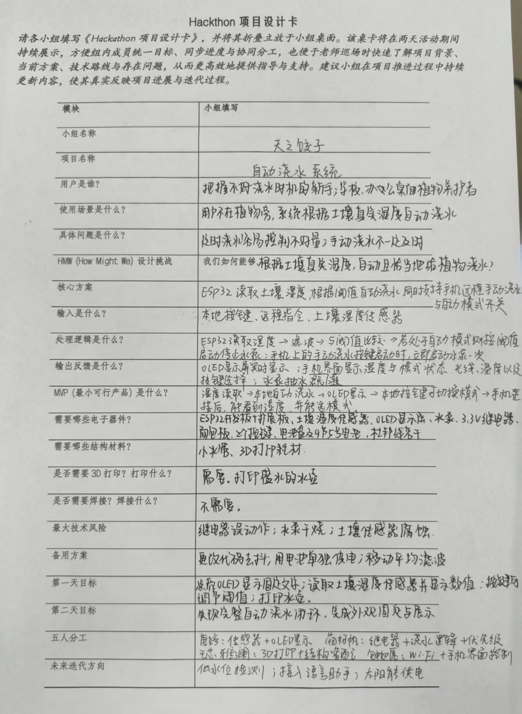
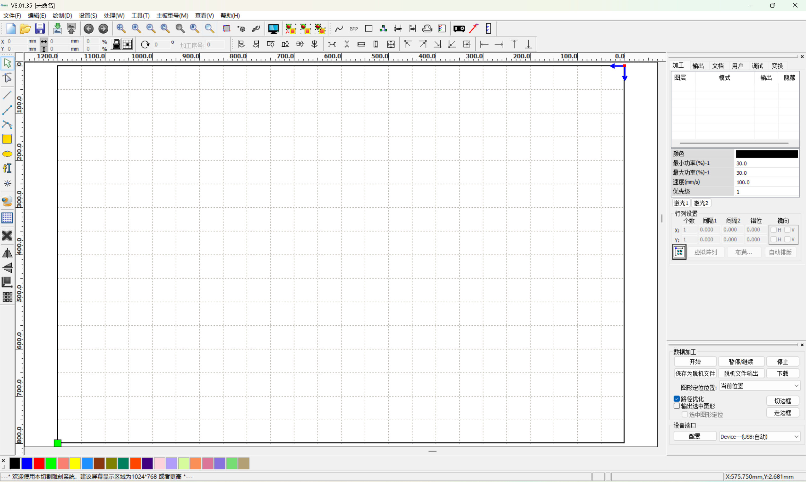
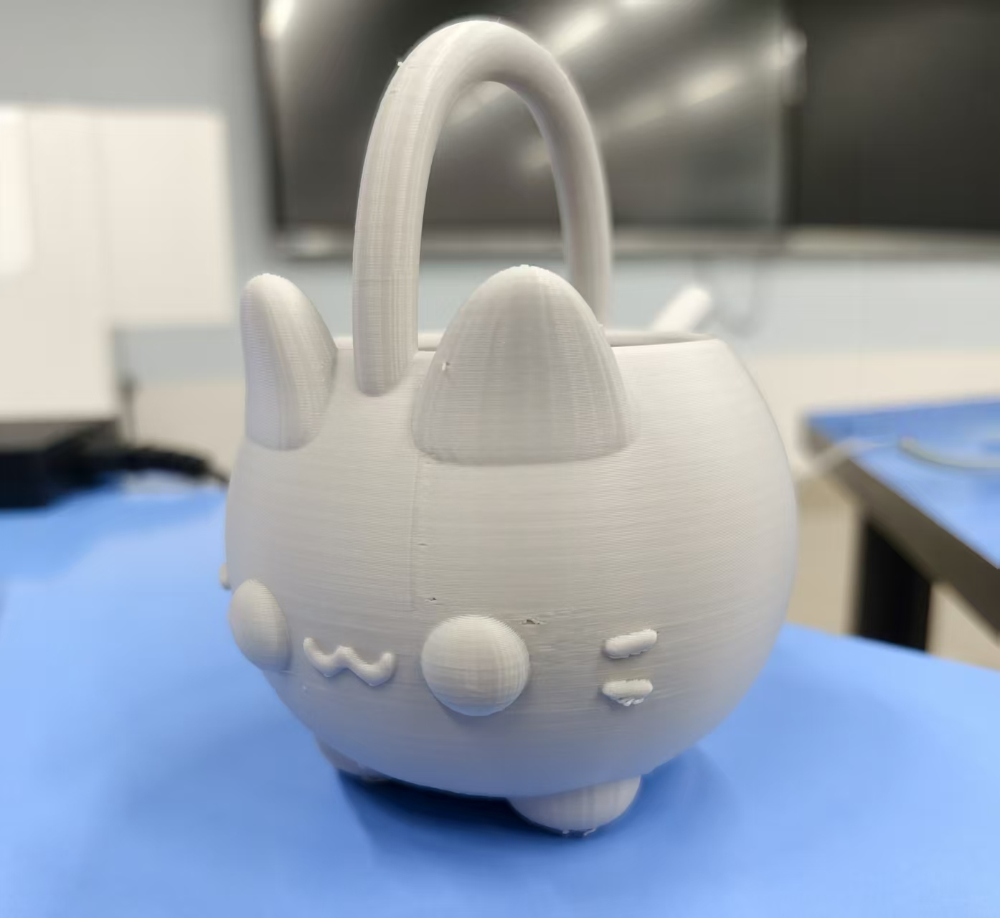
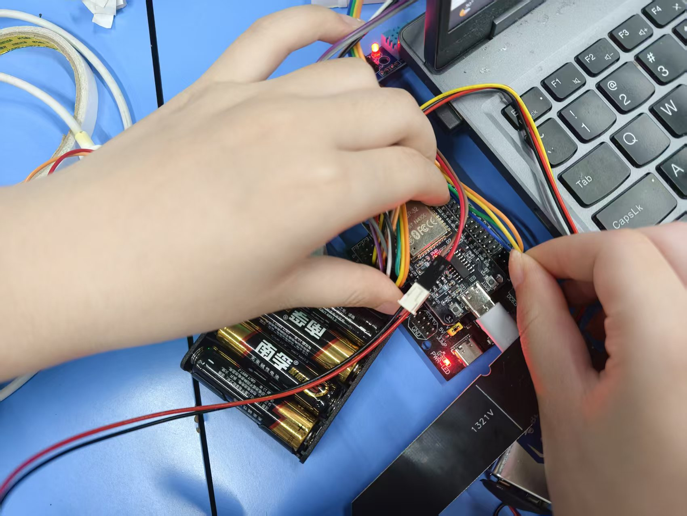
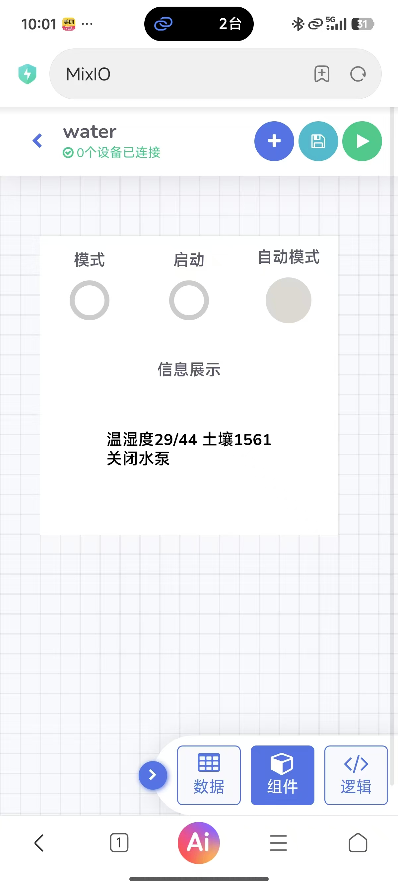
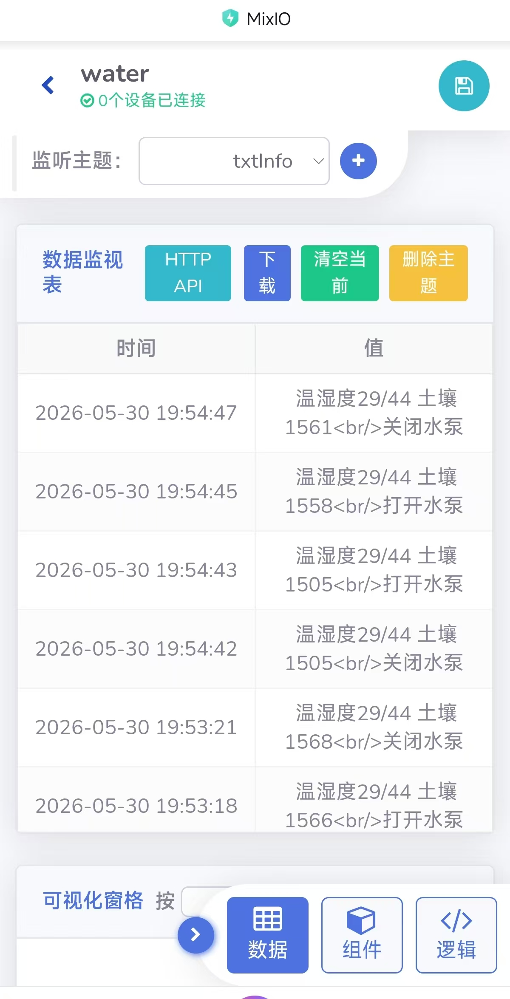
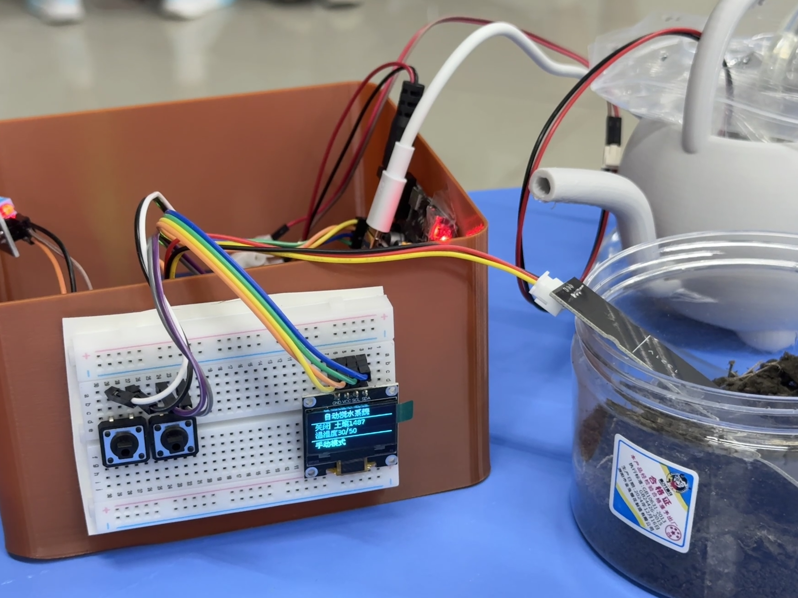
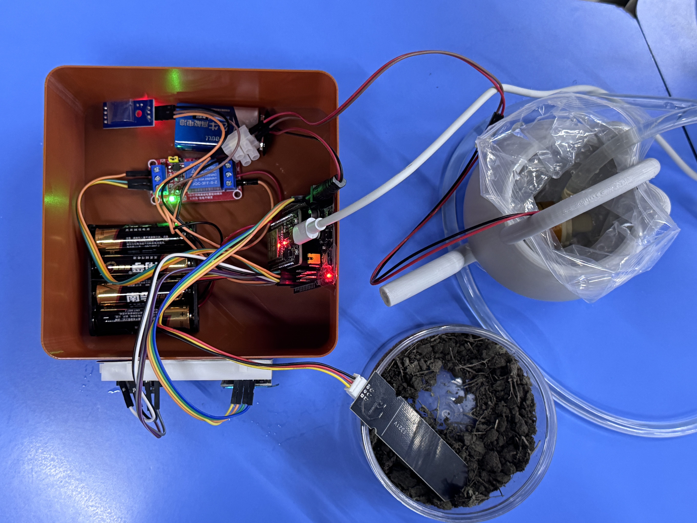

🌱 自动浇水系统 · 智联花友
🏷️ 小组名称： 天之饺子
📅 Hackathon： 5.30 - 5.31
👥 成员： 唐婷 · 蔺柯帆 · 王芯雅澜 · 钟如愿
一句话定义：基于 ESP32 的智能自动浇水系统，通过土壤湿度传感器实时监测，自动/远程控制水泵，让植物养护从此省心。
用户是谁：办公室白领、学校班级绿化角、经常出差或忘记浇水的植物爱好者。
使用场景：用户不在植物旁时，系统根据土壤湿度自主浇水；出差期间可通过手机/网页远程查看湿度、手动补水或调节策略。
HMW 设计挑战：我们如何能够根据土壤湿度自动且恰当地给植物浇水，同时兼顾本地按键与远程的灵活控制？
| 类型 | 器件名称 | 备注 |
|---|---|---|
| 🎛️ 主控 | ESP32 开发板 (NodeMCU-32S) | Wi-Fi + 低功耗控制 |
| 💧 传感器 | 土壤湿度传感器 (电阻式 YL-69) | 模拟量输出，实时监测 |
| 🖥️ 显示 | 0.96寸 OLED (SSD1306, I2C) | 显示湿度/模式/Wi-Fi图标 |
| ⚙️ 执行器 | 微型潜水泵 + 3.3V 继电器模块 | 低电平触发，隔离控制 |
| 🔘 交互 | 轻触按键 ×2 | 模式切换、手动浇水 |
| 🔋 电源 | 5V/2A 充电宝或电池盒(4节5号+升压) | 保证水泵与ESP32稳定供电 |
| 🧩 结构 | 3D打印水壶、外壳 | PLA材质，预留天线开口 |
| 🔌 辅材 | 杜邦线、硅胶水管、密封胶圈 | 防漏水、稳固连接 |
团队完成《Hackathon 项目设计卡》，确定自动浇水方向，细化“本地自动 + 远程手动/阈值设置” 功能边界，评估最大技术风险（继电器误动、水泵干烧、传感器腐蚀）。
最初设想蓝牙遥控，但考虑远程场景改为 Wi-Fi + MQTT；水壶结构手稿调整3次，将水泵放置在水壶底部侧面以保证吸水效率。

🔧 软件组（唐婷、蔺柯帆、钟如愿）

🏗️ 硬件组（王芯雅澜） — 负责3D建模与结构组装


将所有模块连接成完整系统，外壳尚未进行美观修饰。进行了初步功能测试：
✅ 土壤湿度传感器能正常读取数据；
✅ 自动模式下湿度低于阈值时水泵自动启动；
✅ 手动模式下按键可触发浇水；
✅ 远程指令（MQTT）可成功下发手动浇水指令。
由于外壳为临时结构，整体外观粗糙，但核心功能已经跑通。

最终组装：器件固定封装，水壶密封无渗漏；本地按键切换自动/手动；最终演示时实现“本地自动 + 远程手动”完整闭环。




| ⚠️ 问题描述 | 尝试的方案 | ✅ 最终解决 |
|---|---|---|
| 湿度传感器数值跳变剧烈 | 硬件并联10µF电容，软件移动平均滤波 | 窗口大小5的滤波，数值稳定在±3%以内 |
| 继电器吸合导致ESP32重启 | 加1000µF电容、独立供电、加反向二极管 | 电容+独立 5V 供电彻底解决 |
| MQTT频繁掉线 | 修改keepalive，增加重连机制 | 实现reconnectMqtt()循环检查，连续工作稳定 |
| 3D打印水壶渗水 | 水壶里放置塑料薄膜 | 塑料薄膜防水，24小时滴水不漏 |
| 远程手动浇水与本地自动冲突 | 设定远程优先标志，覆盖自动逻辑 | 最终明确优先级：远程强制 > 本地按键 > 自动模式 |
| OLED刷新卡顿 | 全屏刷新 → 改为局部刷新 | I2C速率降至100kHz，仅更新数值区域，帧率提升5倍 |
💪 重要教训： 电源稳定性是所有外设的基础；先做好滤波和防干烧再完善联网功能；分工明确但每日夜间合体联调是效率核心。
| 姓名 | 主要职责 | 具体任务 (含联网控制) | Day1 达成 | Day2 联调贡献 |
|---|---|---|---|---|
| 唐婷 | 传感器与显示模块 | 🌿 土壤湿度校准，OLED实时显示湿度、Wi-Fi状态、模式；预留数据接口供联网调用 | ✅ OLED显示湿度+Wi-Fi图标 | 整合最终显示接口，远程模式联动展示 |
| 蔺柯帆 | 执行与控制逻辑 | ⚙️ 继电器水泵控制，自动浇水决策(阈值/防抖/防干烧)；处理本地按键与远程优先级 | ✅ 本地按键+继电器基础控制，预留远程指令接口 | 完成远程/本地优先级最终调试，防干烧稳定 |
| 王芯雅澜 | 结构与外观设计 | 🏗️ 3D建模水壶、支架，走线及密封，预留天线开口 | ✅ 完成水壶及外壳第一版打印 | 迭代第二版防水优化，整机固定美观 |
| 钟如愿 | 系统集成与联网功能 | 🌐 ESP32代码整合，Wi-Fi/MQTT/Web控制页，对接IoT平台；远程数据上报与指令下发 | ✅ 跑通Wi-Fi连接，实现远程数据上报 and 简单控制 | 联调MQTT稳定性，搭建演示控制面板，完成双控循环 |
开发环境： Arduino IDE 2.0 · 库依赖：WiFi.h, PubSubClient.h, U8g2lib.h, OneButton.h, DHT.h
通信协议： MQTT (自定义主题，对接私有MQTT服务器) + HTTP 简易控制页面
在两天极限Hackathon中，我们团队从零搭建了完整的智能浇水系统，实现了本地自动浇水、远程手动控制及阈值调整双模运行。硬件上融合3D打印与传感器执行器，软件上打通ESP32 + MQTT + 控制页面。同时，我们克服了电源干扰、通信掉线、水泵干烧等多个硬核bug，最终顺利完成“本地+远程”完整循环演示。这次经历深度锻炼了我的嵌入式开发、结构设计、团队协作以及快速迭代的能力，真正诠释了“创客精神”。